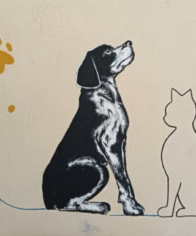

Murales / Canile / Progetto sociale / Visual storytelling
Arvey continua la sua missione d’amore
Un murales per raccontare il legame tra animali, cura e memoria.

Il progetto
Il murales dedicato ad Arvey nasce come intervento visivo dal tono semplice, diretto e profondamente affettivo. La parete diventa uno spazio narrativo in cui il nome di Arvey, le impronte colorate, il cane, il gatto e la casetta costruiscono un messaggio di continuità, protezione e amore.
La frase “continua la sua missione d'amore” trasforma il murales in un segno di memoria viva: non solo decorazione, ma racconto di un legame che resta e continua a generare cura.
La frase
“Il cane è tra il bambino e l'angelo” — Totò, Antonio De Curtis
Elementi visivi
Dettaglio

La testimonianza del Canile
★★★★★
“Un sincero grazie a Francesca Rossello per il tempo, l’impegno e la professionalità dedicati alla nostra struttura. Grazie a questo murales, Arvey continuerà ad accompagnare il percorso educativo che portiamo avanti.”
Fonte: Post pubblico del Canile di Savona · 2026
Hai una parete, un luogo o una storia da trasformare in immagine?
Ogni murales nasce da un messaggio da custodire e rendere visibile.
Raccontami il progetto